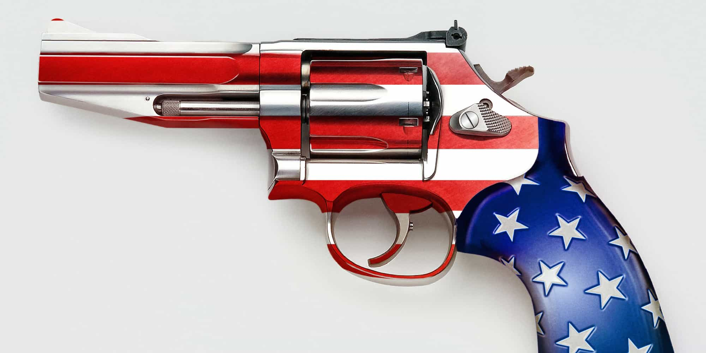
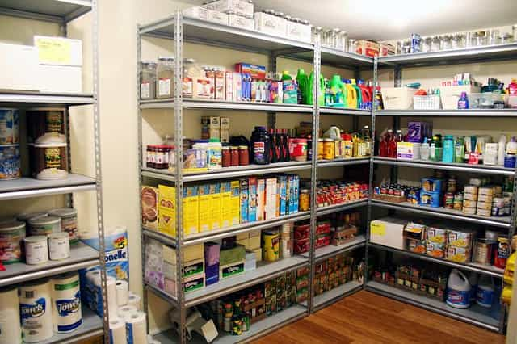
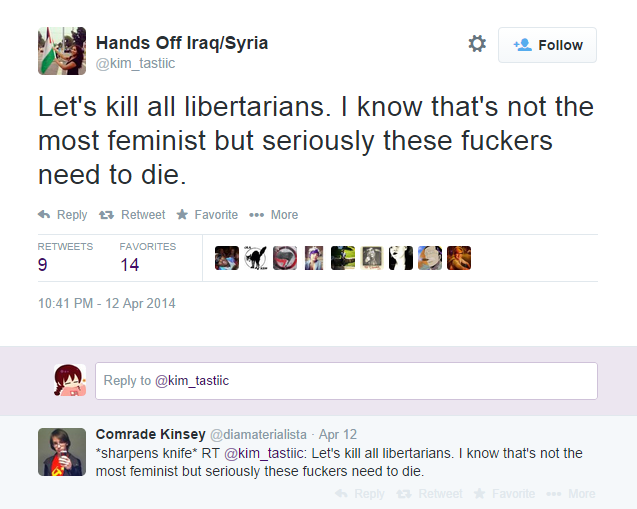

< < < Back
3 Things You Must Do If Donald Trump Is Assassinated – Return Of Kings
The danger of Donald J. Trump or his supporters being seriously injured or killed is very real. At a minimum, you need to have a basic contingency plan for if things go south. Trump may be a political candidate, celebrity, and billionaire vehemently hated by liberals, but if he were to be assassinated, it would be an unprecedented event in the modern political climate. If it happens, leftwing luminaries and the media will be shown to have no control over their supporters, despite them stoking the very same hatred that ended up killing him. The prospect of semi-anarchy in that situation is very likely.
Already, violent mobs descended on Trump’s rally in Chicago. Psuedo-journalist Michelle Fields accused Trump’s campaign manager Corey Lewandowski of assault in a bid to stir up white knight antipathy against The Donald and even violence. Protestors in Arizona blocked highways and then complained about being “run over.” The list goes on.
In light of these very angry leftist zombies hellbent on destruction, here are three ways to respond if Trump is taken out by them:
1. Get a gun for self-defense

You may need one of these when times are rough.
Protecting yourself and your family will be paramount if Trump is assassinated, especially if you have not associated yourself with any leftwing cause. “Donald Trump said things we didn’t like and someone rightfully killed him for it” is going to be the general excuse if the Presidential candidate is assassinated. And this portends very badly for those who supported him, whose safety is never going to make the six o’clock news. It is up to you to help secure yourself and those you love, including with legal firearms.
Sadly, it is endemic to our age that such a low bar for liberal violence has been approved. In Chicago, leftwing hate groups insisted that free speech and freedom of assembly are rights reserved only for people like themselves. We had fists in this case, but expect far more lethal means going forward. Police forces across the United States have engaged in extensive layoffs over the last eight or so years since the Global Financial Crisis; do not expect the authorities to be able to help you. We value their service, yet they are beyond overworked in 2016.
For initial insights into the world of firearms, I recommend my colleague Luke Stranahan’s pieces, notably his guide to buying your first gun. But be sure to familiarize yourself with your state gun laws. From safe storage requirements to conceal and carry provisions, jurisdictional differences do matter.
2. Have two months’ savings plus supplies to ride out political instability or economic depression

You can start much smaller than this. What’s important, though, is that you actually start.
America is a social and economic tinderbox. You need to be materially prepared in terms of food, physical money, and basic medicines for the panic and craziness that will follow an attack on Trump. US government debt is currently at 20 trillion, significantly higher than annual GDP. Liberals and others, although most do not know it, need the crisis of something like an assassination on a controversial conservative figure to absolve themselves of the financial mess they have helped create. So what happens to you? Do you have food and other supplies to ride out the day, let alone the week?
Even without the provocation of an assassination of Trump, the country would have remained in the doldrums without someone like him taking charge. Yet with an assassination, things will get very bad very quickly. Violence against Trump’s person will beget more criminal acts against his supporters and those aligned even moderately with him (i.e. the Republican Party). Plus resources needed for survival will be quickly snapped up or plain stolen in what is left of the marketplace.
Aim to have two months’ salary or more, plus basic foods and other supplies, in reserve to tide you over. If you lack this base at present, build it up over time, regardless of whether Trump ends up being assassinated or not. Obviously you will not spending on certain normal things like the internet and pub drinks when a crisis explodes, so being two regular months ahead will potentially buy you much more time than eight or nine weeks.
It up to you to decide what you need, reflecting your area’s climate, demographics, geography, and other features. Clear essentials include non-perishable food, sufficient clothing to brave the elements, one or two power generators, a first aid kit, and things like flashlights and matches. Be particularly focused on vulnerable members of your family and immediate social circle, such as young children, the elderly, and the sick or disabled.
3. Have social and political backup
Laugh at them all you want, but I’d sooner trust myself with this older group (and the youngster) than a bunch of young men who only just met.
Apparent true believers can always be frauds, but your best bets in a time of crisis like the aftermath of Trump’s assassination will be like-minded people. The media will not bother to help you or others in your situation and in all likelihood relishes the prospect of not covering the violent threats or acts that come your way. As I have already said, US police departments have been ravaged by underfunding, making it extremely shortsighted to rely on them for safety.
Organizations such as (conservative) churches, gun clubs, informal Tea Party groups, neighborhood watch programs, and veterans’ associations are some of the social communities that can provide you with support and companionship during difficult times. You should by no means think that everyone in these contexts is either a Trump sympathizer or reliable, but on the whole they are far more trustworthy than the public at large. Think of other options you may have in lieu of the ones I have mentioned. You know your own community better than I do.
These contacts are best arranged before shit goes down. So take the initiative now and either get involved for the first time or become re-involved with groups that you not only can draw assistance from in times of need, but with which you agree ideologically. The safety factor is joined by the need for Trump supporters to carry on his ideals after he is gone. Inasmuch as Trump has a commanding personality, his resonance with voters reflects deep-seated values and ambitions for America which are not unique to him.
Whatever happens, the SJWs are scared

People mistakenly believe that planning for political emergencies or disasters in your country is a sign of paranoia, not to mention outright psychosis. However, these are the same people who have never had to live through such turmoil. Our world is well overdue for the sort of existential crises that faced our grandparents and great-grandparents. The real fear and mental illness comes from the SJWs trying to desperately shut down alternative viewpoints.
Naturally, we do not want a violent series of events centered on the death of Donald Trump to instigate mass political and social instability. Rather, we want Trump to triumph and bring back the sort of leadership that existed prior to the onslaught of political correctness and social justice activism. This is by no means a foregone conclusion, however. Trump has significant numbers of bitter and sniping enemies. We should support him to the best of our ability, but be ready to protect ourselves and what he stands for in his absence.
It is better to be prepared to live than to have no plan and perish.
 If you like this article and are concerned about the future of the Western world, check out Roosh's book Free Speech Isn't Free. It gives an inside look to how the globalist establishment is attempting to marginalize masculine men with a leftist agenda that promotes censorship, feminism, and sterility. It also shares key knowledge and tools that you can use to defend yourself against social justice attacks. Click here to learn more about the book. Your support will help maintain our operation.
If you like this article and are concerned about the future of the Western world, check out Roosh's book Free Speech Isn't Free. It gives an inside look to how the globalist establishment is attempting to marginalize masculine men with a leftist agenda that promotes censorship, feminism, and sterility. It also shares key knowledge and tools that you can use to defend yourself against social justice attacks. Click here to learn more about the book. Your support will help maintain our operation.
Read More: Is The American Establishment Trying To Get Donald Trump Assassinated?